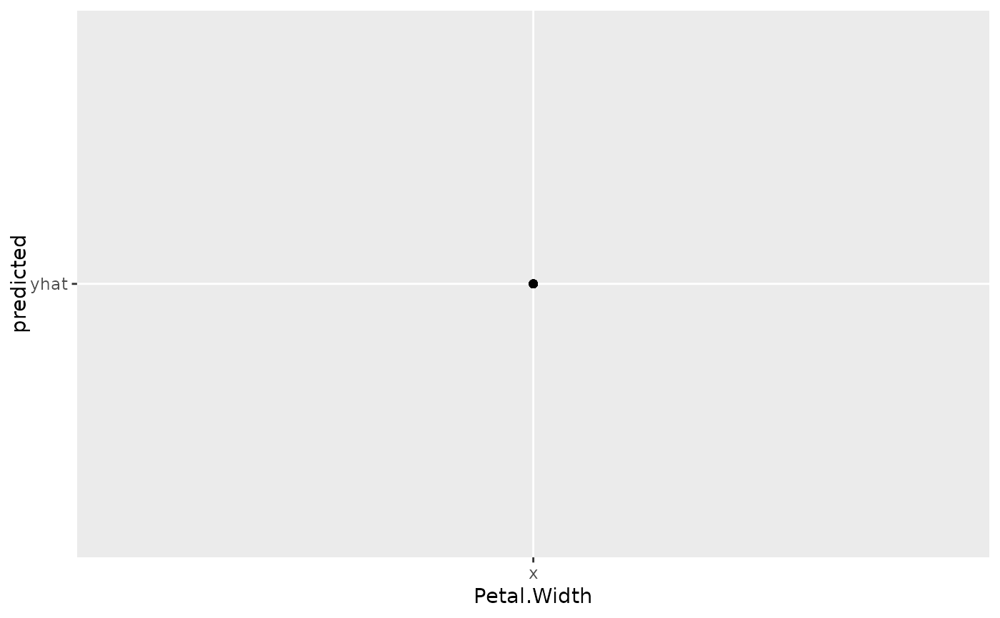
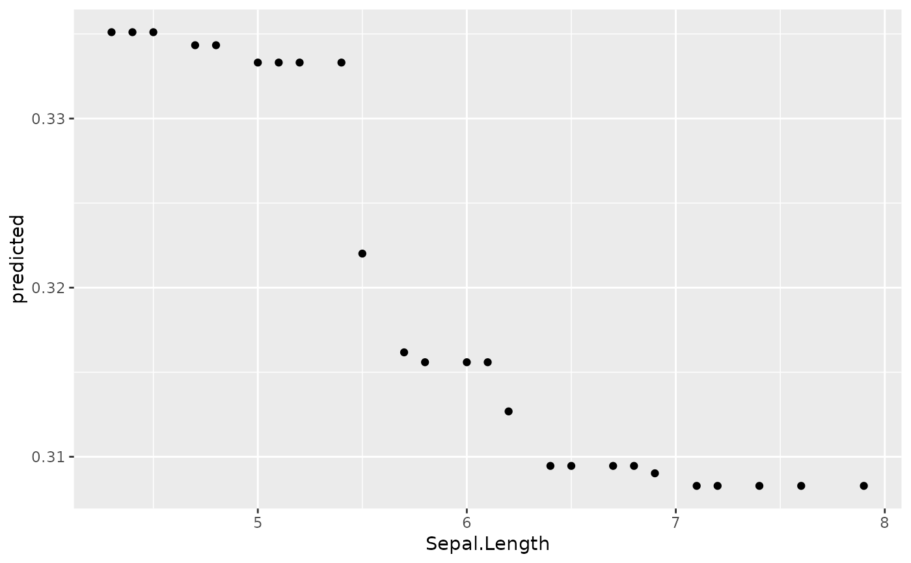
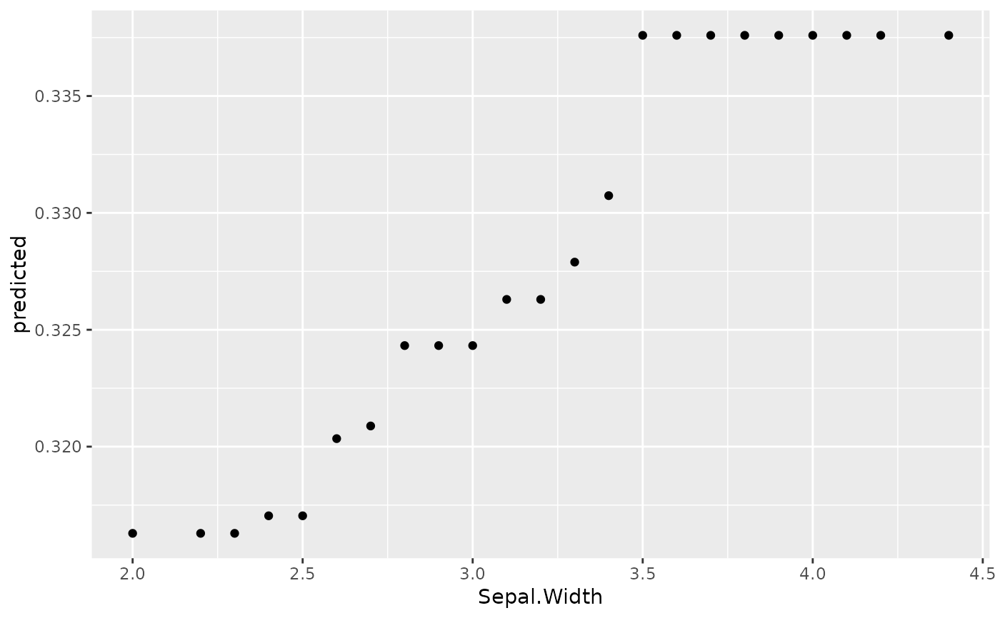

The plot.variable function
returns a list of either marginal variable dependence or partial variable
dependence data from a rfsrc object.
The gg_partial function formulates the
plot.variable output for partial plots
(where partial=TRUE) into a data object for creation of partial
dependence plots using the plot.gg_partial function.
Partial variable dependence plots are the risk adjusted estimates of the specified response as a function of a single covariate, possibly subsetted on other covariates.
An option named argument can name a column for merging multiple
plots together
gg_partial(object, ...)the partial variable dependence data object from
plot.variable function
optional arguments
gg_partial object. A data.frame or list of
data.frames corresponding the variables
contained within the plot.variable output.
Friedman, Jerome H. 2000. "Greedy Function Approximation: A Gradient Boosting Machine." Annals of Statistics 29: 1189-1232."
## ------------------------------------------------------------
## classification
## ------------------------------------------------------------
## -------- iris data
## iris "Petal.Width" partial dependence plot
##
# rfsrc_iris <- rfsrc(Species ~., data = iris)
# partial_iris <- plot.variable(rfsrc_iris, xvar.names = "Petal.Width",
# partial=TRUE)
data(partial_iris, package="ggRandomForests")
gg_dta <- gg_partial(partial_iris)
plot(gg_dta)
#> [[1]]
#>
#> [[2]]

#>
#> [[3]]

#>
#> [[4]]

#>
## ------------------------------------------------------------
## regression
## ------------------------------------------------------------
if (FALSE) {
## -------- air quality data
## airquality "Wind" partial dependence plot
##
# rfsrc_airq <- rfsrc(Ozone ~ ., data = airquality)
# partial_airq <- plot.variable(rfsrc_airq, xvar.names = "Wind",
# partial=TRUE, show.plot=FALSE)
data(partial_airq, package="ggRandomForests")
gg_dta <- gg_partial(partial_airq)
plot(gg_dta)
gg_dta.m <- gg_dta[["Month"]]
plot(gg_dta.m, notch=TRUE)
gg_dta[["Month"]] <- NULL
plot(gg_dta, panel=TRUE)
}
## -------- Boston data
data(partial_boston, package="ggRandomForests")
gg_dta <- gg_partial(partial_boston)
plot(gg_dta, panel=TRUE)
if (FALSE) {
## -------- mtcars data
data(partial_mtcars, package="ggRandomForests")
gg_dta <- gg_partial(partial_mtcars)
gg_dta.cat <- gg_dta
gg_dta.cat[["disp"]] <- gg_dta.cat[["wt"]] <- gg_dta.cat[["hp"]] <- NULL
gg_dta.cat[["drat"]] <- gg_dta.cat[["carb"]] <- gg_dta.cat[["qsec"]] <- NULL
plot(gg_dta.cat, panel=TRUE, notch=TRUE)
gg_dta[["cyl"]] <- gg_dta[["vs"]] <- gg_dta[["am"]] <- NULL
gg_dta[["gear"]] <- NULL
plot(gg_dta, panel=TRUE)
}
## ------------------------------------------------------------
## survival examples
## ------------------------------------------------------------
if (FALSE) {
## -------- veteran data
## survival "age" partial variable dependence plot
##
# data(veteran, package = "randomForestSRC")
# rfsrc_veteran <- rfsrc(Surv(time,status)~., veteran, nsplit = 10,
# ntree = 100)
#
## 30 day partial plot for age
# partial_veteran <- plot.variable(rfsrc_veteran, surv.type = "surv",
# partial = TRUE, time=30,
# xvar.names = "age",
# show.plots=FALSE)
data(partial_veteran, package="ggRandomForests")
gg_dta <- gg_partial(partial_veteran[[1]])
plot(gg_dta)
gg_dta.cat <- gg_dta
gg_dta[["celltype"]] <- gg_dta[["trt"]] <- gg_dta[["prior"]] <- NULL
plot(gg_dta, panel=TRUE)
gg_dta.cat[["karno"]] <- gg_dta.cat[["diagtime"]] <-
gg_dta.cat[["age"]] <- NULL
plot(gg_dta.cat, panel=TRUE, notch=TRUE)
gg_dta <- lapply(partial_veteran, gg_partial)
gg_dta <- combine.gg_partial(gg_dta[[1]], gg_dta[[2]] )
plot(gg_dta[["karno"]])
plot(gg_dta[["celltype"]])
gg_dta.cat <- gg_dta
gg_dta[["celltype"]] <- gg_dta[["trt"]] <- gg_dta[["prior"]] <- NULL
plot(gg_dta, panel=TRUE)
gg_dta.cat[["karno"]] <- gg_dta.cat[["diagtime"]] <-
gg_dta.cat[["age"]] <- NULL
plot(gg_dta.cat, panel=TRUE, notch=TRUE)
## -------- pbc data
data("partial_pbc", package = "ggRandomForests")
data("varsel_pbc", package = "ggRandomForests")
xvar <- varsel_pbc$topvars
# Convert all partial plots to gg_partial objects
gg_dta <- lapply(partial_pbc, gg_partial)
# Combine the objects to get multiple time curves
# along variables on a single figure.
pbc_ggpart <- combine.gg_partial(gg_dta[[1]], gg_dta[[2]],
lbls = c("1 Year", "3 Years"))
summary(pbc_ggpart)
class(pbc_ggpart[["bili"]])
# Plot the highest ranked variable, by name.
#plot(pbc_ggpart[["bili"]])
# Create a temporary holder and remove the stage and edema data
ggpart <- pbc_ggpart
ggpart$edema <- NULL
# Panel plot the remainder.
plot(ggpart, panel = TRUE)
#plot(pbc_ggpart[["edema"]], panel=TRUE) #,
# notch = TRUE, alpha = .3, outlier.shape = NA)
}